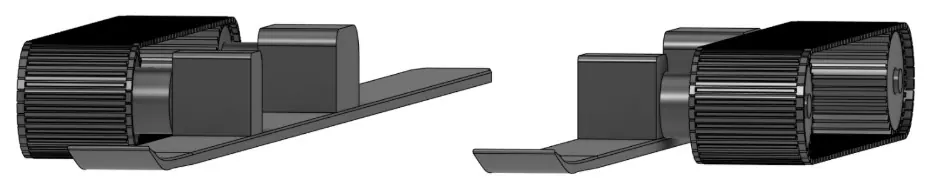
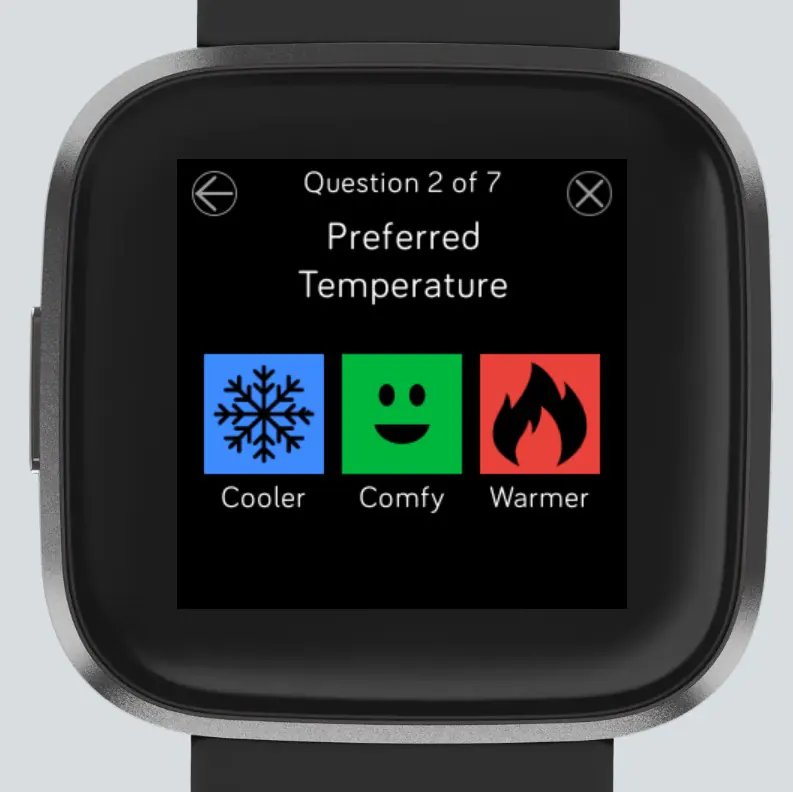
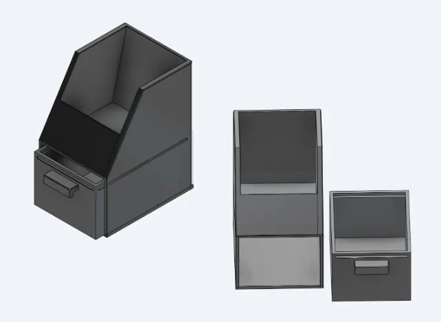
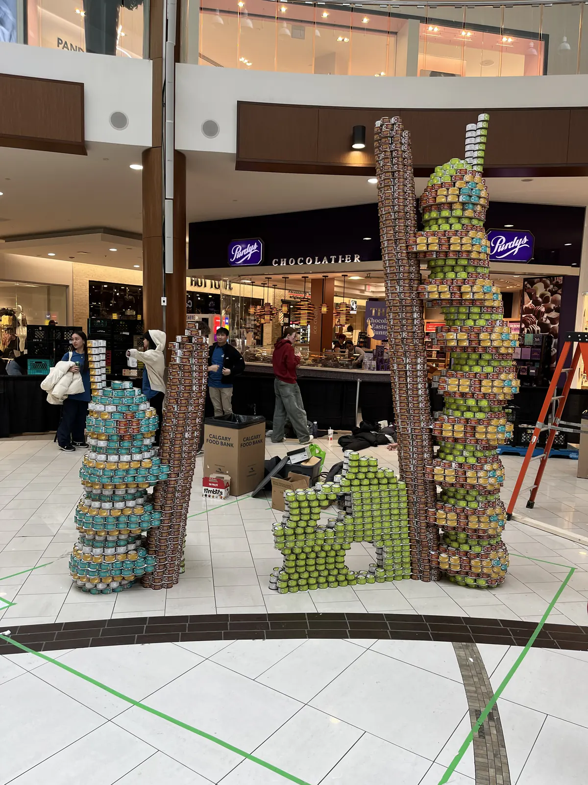
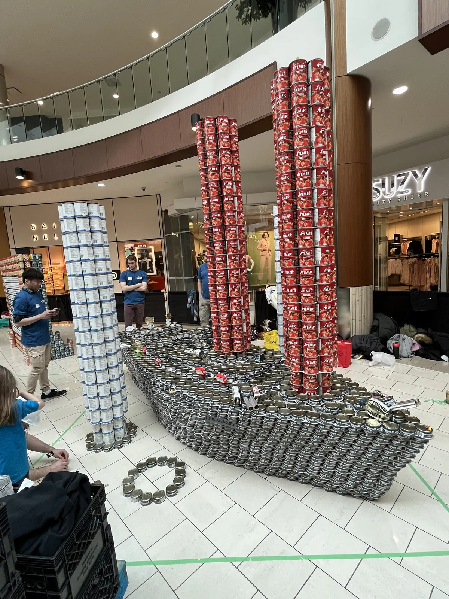
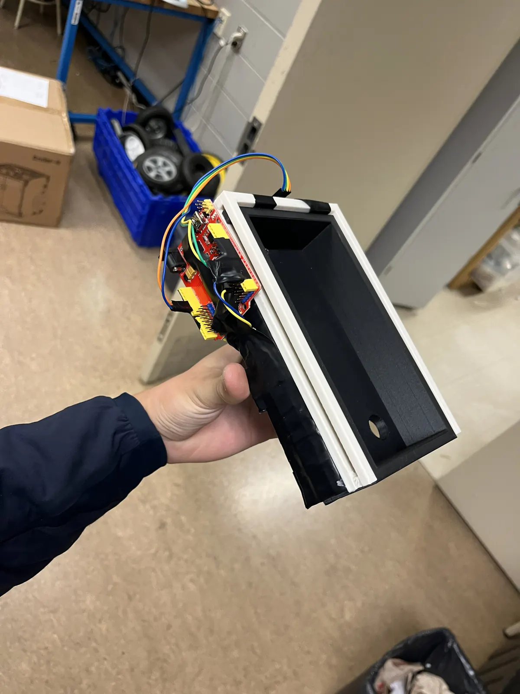

20Projects
What I've Built
A selection of my work across robotics, mechanical design, and software. Each one went from an idea to a working result.
 5
5
Vertical Axis Wind Turbine
A six-foot vertical-axis wind turbine built by the University of Toronto Wind Turbine Design Team. I contributed to its mechanical design, structural analysis, machining and final assembly. In July 2026, I was one of eleven members who presented the turbine in the Netherlands at the International Small Wind Turbine Contest, hosted by Delft University of Technology and Hanze University. In wind tunnel testing, it started delivering usable power at 4 m/s.

4 VideoMotorized Cross-Country Ski-Assist Device
A powered attachment for children's cross-country skis that helps young skiers keep pace with their parents on family outings. It was designed by a team of six for an external client in Engineering Strategies and Practice 2 (APS112) at the University of Toronto. The design targets groomed trails at temperatures down to −20 °C. We generated eighty concepts and narrowed them through a feasibility screen, multi-voting and graphical decision matrices, and a weighted Pugh matrix picked the final design.
I produced the computer-aided design models and dimensioned manufacturing drawings for two of the three shortlisted concepts in Autodesk Fusion and SolidWorks. The belt-driven traction attachment uses a rear motor hub to drive a sprocket pair and a continuous tread along the bottom of the ski for grip on packed snow. The motorized paddle wheel uses a brushless direct-current motor to spin sprocket-shaped rotors that push against the snow. It mounts with adjustable suction cups and fits youth skis from 110 cm to 170 cm without permanent changes. Both designs fully enclose their moving parts to meet toy-safety and IP66 water and dust protection requirements for users as young as three. The paddle wheel ranked first in the final Pugh matrix.

Pick-and-Place Robotic Arm
A concept for a pick-and-place robotic arm that sorts parts by colour. An interactive kinematic simulation validates the arm's reach, joint layout and claw geometry before any hardware is ordered. The next phase is the physical build, with servo and stepper motors sized against a torque budget for each joint.
Try the simulation
Fitbit Ecological Momentary Assessment Survey App
A custom Fitbit OS clock face and phone companion app, built in JavaScript, SVG and CSS for the Building Energy and Indoor Environment Lab at the University of Toronto. It runs scheduled and on-demand surveys for more than twenty participants in a multi-summer heat-exposure study. Each answer is sent from the watch over Bluetooth to the phone and from there to a cloud store, and the research team downloads the data as a comma-separated values file ready for analysis.
Read the full project
Finliti: Product Development
A redesigned card dealer for Finliti's financial literacy board game, delivered through a University of Toronto Engineering Students Consulting Association engagement. I led the computer-aided design in Autodesk Fusion and the prototyping. The redesign takes up 30% less space while still holding 160 cards, and it was refined through several rounds of fused deposition modelling prototypes and testing. It met every one of the client's targets.

Calgary Food Bank: CANstruction 2025
A large structural sculpture built entirely from donated canned food for the 2025 Calgary Food Bank CANstruction event. Working with professional engineers from Fluor, our team used load path and stability analysis to make the structure as tall as the cans could support without glue or fasteners. Every can went to the food bank afterward.
Read the CTV News story ↗
2Calgary Food Bank: CANstruction 2024
A canned-food sculpture for the 2024 Calgary Food Bank CANstruction event, and my first time applying load distribution, centre of mass and stability analysis to a real structure, alongside practising structural engineers.
 2
2
Bluetooth-Controlled Car
A four-wheel-drive vehicle with a skid-steer drivetrain, operated from a mobile phone through the Dabble app. An Arduino Uno receives gamepad commands over Bluetooth and drives four gear motors through an L298N dual H-bridge motor driver. The firmware applies pulse-width modulation speed control with ramped acceleration. Two 9 V batteries wired in parallel supply the vehicle through a main isolation switch. I designed the chassis, motor mounts and removable body shell in Autodesk Fusion computer-aided design software and manufactured them by fused deposition modelling 3D printing.
Schematic, code and design process
Ultrasonic Light-Up Drawer
A self-lighting drawer that turns on when opened and off when closed. An HC-SR04 ultrasonic sensor measures the drawer's position by timing an echo. The Arduino applies a median filter and hysteresis so the light never flickers, and fades a light-emitting diode on and off with pulse-width modulation. I designed the drawer and housing in Autodesk Fusion computer-aided design software, printed them by fused deposition modelling, and wrote the firmware in Arduino C++.
Schematic, code and design processNo projects of that type yet.